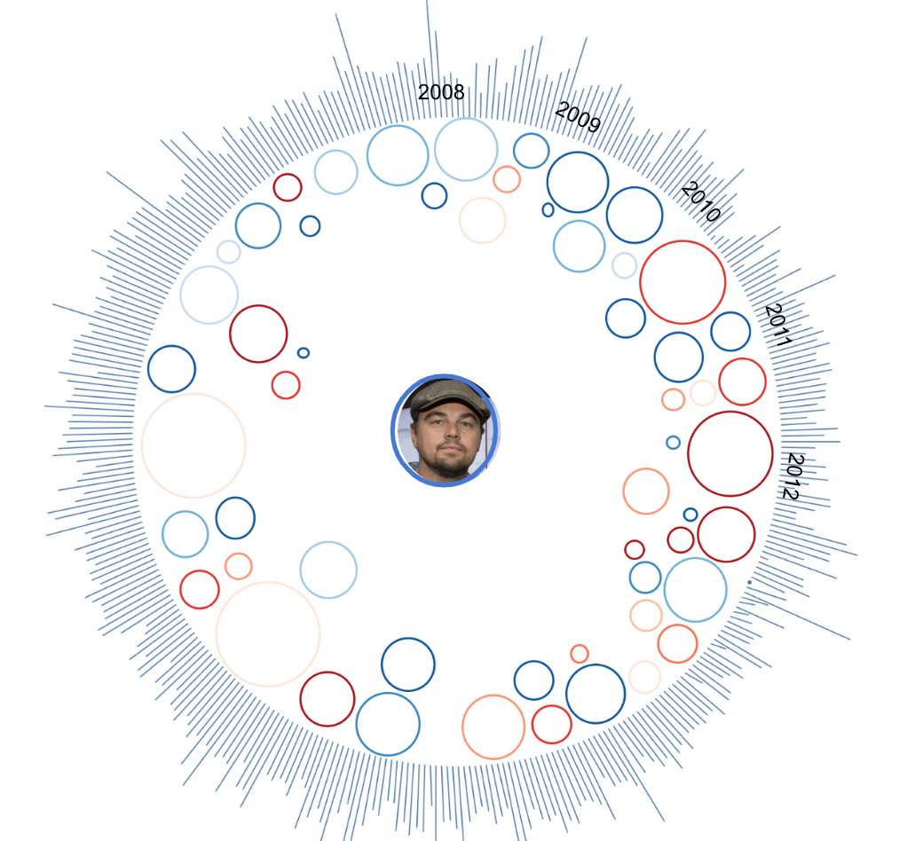
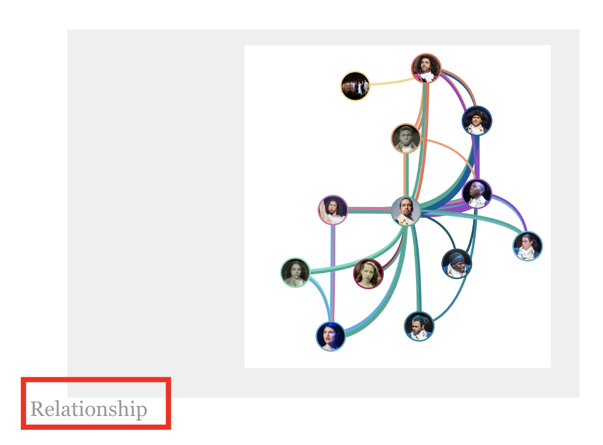

overview
The movie star visualization is a group project for data visualization course at HKUST. The website could be found here.
In the visualization we gave an overview of the activeness of movie stars over time, a individual profile of an actor, the relationship between every movie star, and the casting of him in different genres of the movie.
My role
- Data Pre-processing
- Front-end scripting
- Back-end connectivity
- CSS Styling
- System integration
Initial Design
We targeted the purpose of this visualisation towards movie lovers or anyone who is interested in a special actor in the movie industry. We came up with different visualizations to portrait the entire movie industry, the actor' s relationship with other actors, as well as the genres he/she belongs to.
Overview of the movie industry
Nodes as actors
Size of the node indicates the number of movies he/she casted in; color indicates the gender (blue - male, red - female)
Relationship between actors
Inspired by a visualization of Shakespare' s hamlet. We put a link between the nodes if the two actors have worked together in the same movie. The color of the link representing different genres of the movies.
Genres
We also intended to give a overall picture of the genres, with different color representing different genres. If clicks on one of the genres, it shows the main actors in that genre.
Final design components
Overview of the movie industry
Looking at the expansion of the movie industry throughout time and the actors that had/have a predominant role in that expansion.
Specific genre picture
Find out about actors of a specific genre and from a time period undiscovered yet by the user.
Here filtered based on “Comedy” and “Romance” movies from 1930 to 1965.
Specific actor profile
Whenever the user knows about an actor and would like to have a summary of the movies she/he has been in.
Data Preprocessing
IMDB data: From https://www.kaggle.com/rounakbanik/the-movies-dataset
Data cleaning: Only selecting movies that were released
Feature engineering: Study feature correlation
Output popularity score of each movie. Weights for popularity were calculated to take into account vote average and release date.
Key takeaways
In this project, I got to apply the data visualization principles taught in class and designed the visualization of movie stars over time with my interpretation. I also explored the D3JS library and had a lot of fun play around with different available resources to build the frond-end part of our server.
Besides the data visualization part, this project also gave me an idea of website building and deploying process. I took the responsibility of connecting back-end to front-end server and deploying it to a heroku server.